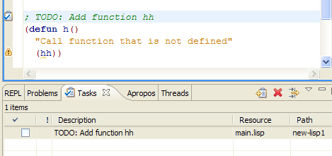
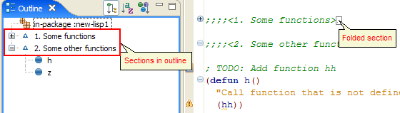
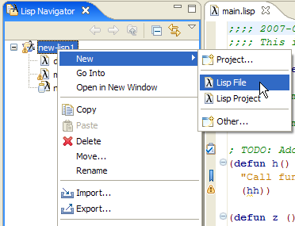
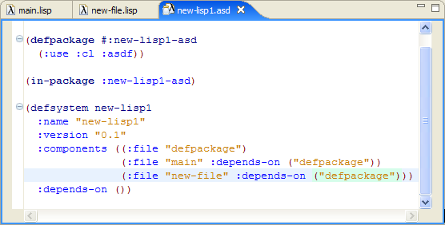
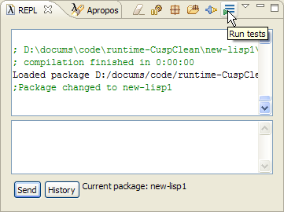
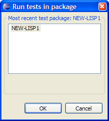
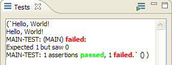

Advanced Navigation Features
There are several features in Cusp that help in working with big Lisp projects.
Task list: You can automatically add task by putting 'TODO:' in ';' comment:

Sections: You can divide your code into sections by using comments that start with ;;;;<:
;;;;<Section name> description
Then a section can be folded in the editor and you can quickly navigate between sections using Outline:

Bookmarks: Cusp supports regular bookmarking facility of Eclipse. Read Eclipse manual on bookmarks.
KeyBindings: Navigational (and other) operations in Eclipse can be performed using a key combination. To see and customize key settings, go to Window->Preferences->General->Keys
Adding Files to the Project
To add another file to the project you have two options:
Create new file from Eclipse: Right-Click on the project in Lisp Navigator and in context menu select New->Lisp File

This opens dialog box, where you can select name of new file. Hitting Finish will create new file.
Also, you can just copy file to the folder and Refresh Project : Right-Click on the project in Lisp Navigator and in context menu select Refresh
Then you need to do two more things:- put correct in-package statement at the top of the file
- add code (:file "file-name" :depends-on ("defpackage")) to :components clause of .asd file:

Testing
Cusp now comes with integrated testing facility. It is just an interface to
lisp-unit.
The 'lisp-unit' package is loaded on Lisp startup (customizable in properties).
You can use it as described on its webpage. However Cusp provides convinience
interface to it.
You can test this interface by creating new lisp project
with default settings (in this case example test and function are created).
Once project is loaded just click on 'Run tests':

This brings dialog which shows all loaded packages that have tests defined in
them:

Select package that you want to test and click OK. Tests will be run and
the results will be displayed in Test view:

Back to table of contents